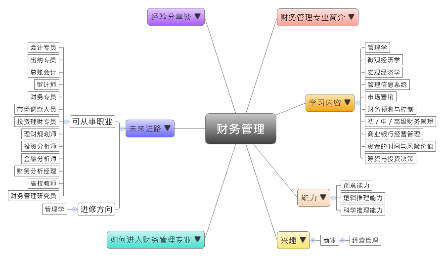

- 专业大观园
-

- 专业介绍
-
什么是财务管理？
财务管理是研究组织的财务活动，并处理各项财务关系的经济活动。这是一门通过妥善计划、聪明决策、全面控制、适时考核与彻底监督的一连串活动，让组织的资金流动正常并具高效益成长的金融管理学科。在职场上，许多企业都逐渐朝向以财务管控为核心的管理形态，所以财务管理专业的人才需求受到很大的重视。毕业生一般可到企业中担任会计人才、管理会计、理财规划师等；在生活中，具备财务管理素养可以让我们聪明地赚钱，善用理财工具，如保险、债券、股票、基金、彩券，不仅开源，更能节流，早日达到财务自由的境地。
财务管理专业除了训练学生扎实的财务、金融管理知识与应用能力，最好能搭配电子商务、物流管理等相关知识，让此专业的学生能具备全方位的财务分析与解决金融相关问题的能力。
进行财务会计模拟课程 团体讨论－财务成本与预算的分析
- 学习内容
-
财务管理专业学生主要学习经济学（财务、金融）、管理学等相关的理论与知识，财务管理专业重视应用能力，学生须接受财务上的成本与预算的预测、计划、控制、考核、分析等专业训练。
本专业学习方向通常分为三类：经济学类、工商管理类、会计学类。财务管理专业主干课程有：管理学、微观经济学、宏观经济学、管理信息系统、统计学、会计学、市场营销、经济法、财务预测、财务控制、初级财务管理、中级财务管理、高级财务管理、商业银行经营管理、资金的时间价值与风险价值、筹资决策、投资决策……等。此外，学生须加选一门以上的实践性教学课程，如：计算机模拟和财务会计模拟实训进行选修。
本专业可以习得的知识与获得之能力、技能列点：第一，具备扎实的管理学、经济学、财务与金融等理论与知识，以及能进行财务分析、控制、管理、预测的能力；第二，擅长人际沟通、具备语言与文字表达能力，并有利于获取财务相关的信息，以解决实际问题的能力；第三，了解我国财政管理的相关政策，以及随时注意全球财务管理的最新发展趋势。
- 能力
-
财务管理专业学生，需具备以下能力：
相关性向能力 说明 创意能力  运用最少的资源创造最大利益的能力
运用最少的资源创造最大利益的能力
具备财务和金融管理知识并能进行投资的能力逻辑推理能力 能分析财务管理的原则
具备投资决策的批判与独立思考能力
能够针对如何获利提出假设并进行验证科学推理能力 具有从事财务控制和预测的能力
具备看懂财务报表与进行财务分析的能力
能推测并引导国际财务管理研究的发展动向
- 兴趣
-
若你对下列活动或事物有高度兴趣，可考虑进入财务管理专业学习：
商业 经营管理 喜欢从事数字运算与分析的工作
善于整理财务状况和分析市场需求
对投资、财务规划等能有效获利的活动感兴趣
- 如何进入此专业
-
下面列举开设财务管理专业的211工程重点大学院校：
- 未来进路
-
可从事职业
在社会竞争日趋激烈下，优秀的财务管理对于企业的发展有很大的帮助，所以此专业毕业生在就业上有多重的选择。学生毕业后，通常会进入以财务管控为核心的企业中，担任财务专员或、会计员、会计记账人员或报税人员等；在金融业，如保险、银行、证券，可从事投资理财、咨询顾问、理财规划等工作；最后则是在各高等院校或科研部门从事财务相关的学术与教学的工作。在工作职场上皆能发挥财务分析、风险管理等专长：
行业 职业 商业服务业 会计专员、出纳专员、总账会计、审计师、财务专员、预算专员、市场调查人员、成本会计规划人员 金融业 投资理财专员、咨询顾问专员、理财规划师、投资分析师、融资主管、金融分析师、风控主管、财务分析经理 教育 高校教师 科学研究 财务管理研究员 进修方向以下列举财务管理专业毕业生可以继续修读之学科门类、一级学科与硕士点：
学科门类 一级学科 硕士点 管理学 工商管理企业管理、会计学、工商管理、市场营销管理、财务学、信息资源管理、电子商务、项目管理、物流与供应链管理、公司治理 工商管理（专业硕士）企业营销与物流管理、财务管理、金融管理、知识产权管理 会计（专业硕士）高级注册会计师方向、管理会计与管理控制方向、审计与企业内控方向、税务管理方向、高级金融分析与风险管理师方向 注：财务管理专业硕士报考资格 财务管理专业硕士报考资格
财务管理专业硕士报考资格1.大学本科毕业后，有3年以上工作经验
2.获得国家承认的高职高专毕业学历后，有5年以上工作经验
3.已获硕士学位或博士学位，有2年以上工作经验
- 经验分享谈
-
关心青年，甘当人梯的财会专——谷祺教授
谷祺教授1952年毕业于上海圣约翰大学经济系，先后在东北财经学院、辽宁财经学院、东北财经大学任教。长期从事财务学和审计学等学科的教学和科研工作，主要著作有《财务管理》等。
谷教授一向注重理论与实践相结合，积极倡导教学与科研相结合。长期以来，他潜心钻研、勤奋著述，先后撰写、翻译、校纂各种专业学术著作、教材、工具书达30余种，发表学术论文、译文40余篇，累计800多万字。他的论着涉及财务管理学、管理会计学、成本管理学以及审计学等各个领域，尤其在财务成本研究领域颇有建树。其主要代表作《工业企业财务管理》系统地论述了财务学的一般原理,并以工业企业为例,简要说明了固定资金、流动资金、产品成本、销售收入和企业纯收入、专项资金以及财务收支管理的内容与方法，该书作为高等财经院校的统编教材。
谷教授关心青年，甘当人梯，被公认为“传、帮、带”的典范，他从政治上、思想上、业务上关心中青年教师的成长，深为中青年教师所爱戴，也赢得了全国广大中青年财会工作的敬重。1988年，他对中国中青年财务成本研究会的成立给予了极大的支持。此后，作为该会顾问，他一如既往地指导该会工作，为该会的成长、壮大花费了大量的心血。
谷教授已率领一批中青年教师和研究生投身于“财务管理和管理会计的理论与方法”。他在科研与教学领域耕耘了四十余年，除了著作等身，桃李天下，也获得了1991年大连市优秀教师等各种荣誉。 【资料来源：互动百科 谷祺.】